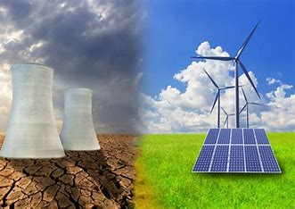

"Avanço científico revoluciona a geração de energia limpa"
POR JUnior JUnior
Publicado em 28/06/2023
Pesquisadores de uma renomada instituição científica anunciaram hoje um avanço revolucionário no campo da geração de energia limpa, abrindo caminho para uma mudança significativa na indústria energética global. A descoberta promete uma fonte de energia renovável, barata e sustentável, capaz de suprir as demandas crescentes por eletricidade em todo o mundo.
A equipe de cientistas desenvolveu uma nova tecnologia baseada em painéis fotovoltaicos que supera as limitações dos sistemas atuais. Esses painéis, que possuem um design inovador, são capazes de capturar e converter uma quantidade excepcionalmente maior de energia solar em eletricidade utilizável. A eficiência energética alcançada com esse avanço é consideravelmente superior a qualquer tecnologia existente no mercado atualmente.
O segredo por trás dessa revolução energética reside em uma nova abordagem para a captação da luz solar. Através de uma configuração complexa de nanomateriais, os cientistas conseguiram aprimorar a eficiência de conversão, permitindo que uma porcentagem muito maior da energia solar incidente seja convertida em eletricidade. Isso representa uma grande conquista no setor, uma vez que as tecnologias convencionais de geração solar têm enfrentado desafios na conversão eficiente da luz solar em eletricidade.
Além da incrível eficiência, os painéis fotovoltaicos desenvolvidos são fabricados com materiais de baixo custo e ambientalmente amigáveis, tornando-os acessíveis e sustentáveis em larga escala. A aplicação dessa nova tecnologia poderia significar um impulso significativo para a transição global para fontes de energia renováveis, reduzindo a dependência de combustíveis fósseis e diminuindo as emissões de gases de efeito estufa.
A notícia gerou entusiasmo e interesse imediato em todo o setor de energia, bem como em governos e ambientalistas preocupados com as mudanças climáticas. Os especialistas acreditam que essa descoberta tem o potencial de revolucionar a indústria energética, abrindo novas possibilidades para um futuro mais sustentável e reduzindo a pegada de carbono global.
Os pesquisadores estão agora trabalhando para aprimorar ainda mais a tecnologia e planejam colaborações com empresas do setor para viabilizar a produção em escala comercial. A expectativa é de que, nos próximos anos, esses painéis solares de última geração possam ser amplamente implantados, fornecendo uma fonte de energia limpa, abundante e acessível para as necessidades crescentes da sociedade.
Esse avanço científico emocionante representa um grande passo em direção a um futuro mais sustentável, no qual a energia limpa pode se tornar a principal fonte de abastecimento global, impulsionando o progresso econômico e mitigando os impactos ambientais negativos associados às fontes de energia convencionais.